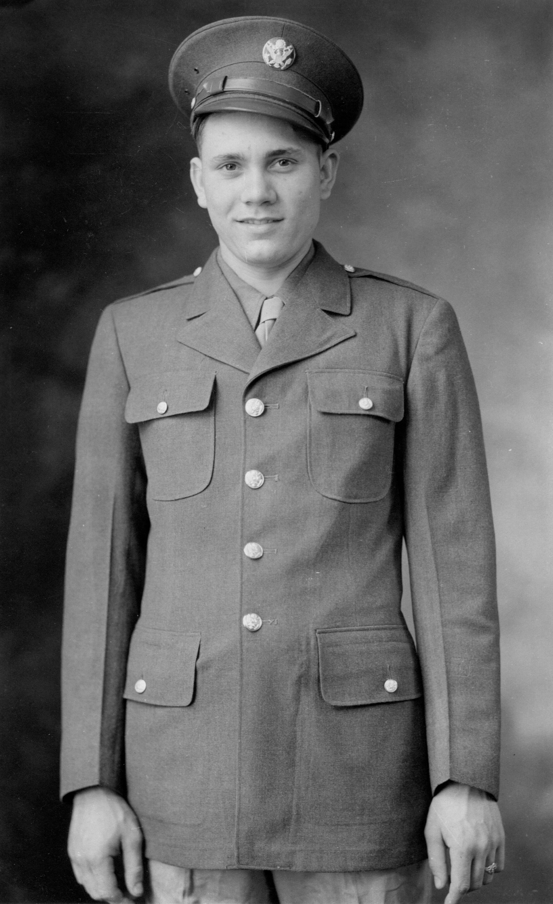
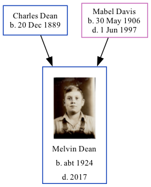

Melvin Charles Dean c1924 - 2017
[ Home ] | [ Calendar ] | [ Surnames Index ] | [ Family History ]The child of Charles Dean and Mabel Davis, Melvin Dean, the fifth cousin once-removed on the mother's side of <a href="I1.html">Nigel Horne</a>, was born in Indiana, USA <i>c.</i> 1924.</p><p>Throughout his life, he lived in Lewis, Clay, Indiana on Apr 1, 1930<span class="citation">1</span> and on Apr 1, 1940<span class="citation">2</span> (the same place as his parents had been living on Apr 1, 1930). <p>He died in 2017.
Parents
- Charles Otha was born on Dec 20, 1889
- Mabel Charlotte was born on May 30, 1906
Citations
- US Census 1930 - Findmypast (was age 5 and the son of the head of the household)
- US Census 1940 - Findmypast (was age 15 and the son of the head of the household)
Media
Melvin Dean

Melvin Charles Dean

Melvin Charles Dean - 2
US Census 1930 - USC/1930/004950597/00346/029
US Census 1940 - USC/1940/1456719737
Family Tree
Generated by Ged2Site. Last updated on Jul 20, 2025